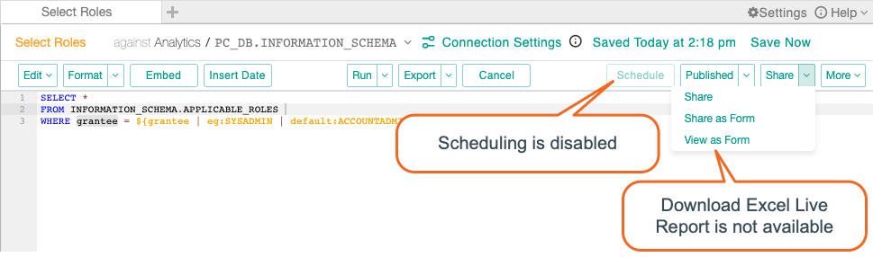
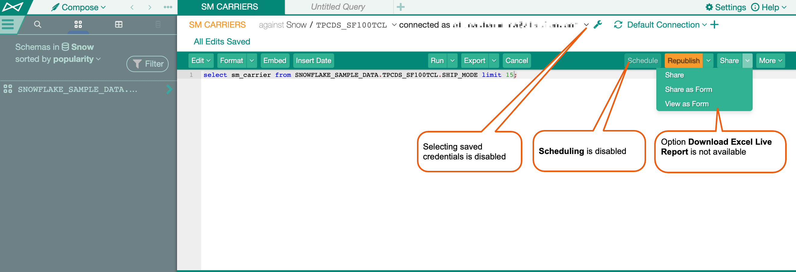

Transient User Credentials¶
Alation Cloud Service Applies to Alation Cloud Service instances of Alation
Customer Managed Applies to customer-managed instances of Alation
Available from version 2020.4
Alation can be configured not to store database user credentials on the Alation server (Transient Credentials mode). When this is the case, users re-authenticate every time they establish a database connection from the catalog or Compose in order to:
Run a query
Run a query form
Run a Dynamic Profile for a Table of a Column object
Upload data to the database using the data uploader feature
Transient credentials can be activated by an Alation admin by enabling the Transient mode for user credentials storage. On how to enable the Transient mode, see Disable or Enable User Credentials Storage.
A database connection opened by a user in Compose or the catalog expires after 1 hour (default). Database connections established with Transient Credentials can be re-used until they expire or until the Alation page is refreshed.
Note
Some Compose features become unavailable for non-OAuth data sources when Transient user credentials are activated. These are:
Query scheduling
Excel Live reports
Use Compose in Transient Credentials Mode¶
Compose users are first prompted to enter their credentials when they attempt to run a query. The credentials that users entered can be re-used during the current user session until the page is refreshed or until the database connection expires. When the connection expires, the user refreshes the page, or re-logs in, they will be prompted to enter the credentials again when running the next query.
When Transient Credentials mode is enabled, certain functionality changes in Compose:
Starting with 2022.1, the Connect as (Select User) drop-down in the Connection Settings dialog can only have one user in the list. If you add a new user, it will replace the prior user in the list. Before 2022.1, the Connected As dropdown is disabled and saved database connection credentials cannot be selected and used.
The Schedule button is not available. Published queries cannot be scheduled when the Transient credentials mode is activated.
In the Share dropdown, the Excel Live Report option is removed. Excel Live Reports are not available in the Transient Credentials mode.
From 2022.1 onward:
Before 2022.1:
Run Catalog Operations in Transient Mode¶
In the catalog, the Transient credentials mode affects query forms, Dynamic Profiling, and data upload. When a user runs a query form, generates a Dynamic Profile for a table or a column object, or attempts to upload data to the data source, they will be prompted to enter their database credentials.
The credentials they enter are re-used until the current page is refreshed, the user logs out or the connection expires.
Saved database connections are not created when the Transient mode is enabled.
Note
DB connections saved before the Transient mode is enabled are not deleted. To see and remove saved connections, click on the My Account icon in the top right corner, then select Account Settings and click on the DB Connections tab. Transient mode may not work fully until existing database connections are removed.
OAuth and Transient Credentials Mode¶
The Transient Credentials mode does not prevent authentication with OAuth when it is enabled and configured for a data source. With OAuth enabled for a data source, user credentials are not stored on the Alation server, and authentication goes via the authorization server configured on the database side. The Transient mode does not prevent the storage of OAuth tokens and the associated database usernames.
For data sources with OAuth enabled, all Compose and catalog operations that use database connections are available, including query scheduling and Excel Live Reports.
Before 2022.1, performing an action that uses a database connection opens the Data Source Authentication dialog with a redirect link to the authorization server of the database.
Starting with 2022.1, running queries in Compose, running query forms, and downloading Excel Live reports will open a new dialog where you can select or edit a connection and user. The dialog may have a different title depending on the action you’re performing, but it works the same. After choosing a connection and user, you will then be automatically redirected to the authorization server of the database. Other actions (scheduling a query, uploading data, and running profiling with Dynamic Profiling enabled) that require a database connection will continue to use the older Data Source Authentication dialog as they did before 2022.1.
Compose¶
Clicking the Run button in Compose opens the Data Source Authentication dialog with the redirect link to the authorization server of the database.
Catalog¶
Clicking the Get Results button for a query form or the Upload Data button for the data source opens the Data Source Authentication dialog with the redirect link to the authorization server of the database.
With Dynamic Profiling enabled, clicking the Run Profile button for a Table or Column object of the data source Profiling opens the Data Source Authentication dialog with the redirect link to the authorization server of the database.